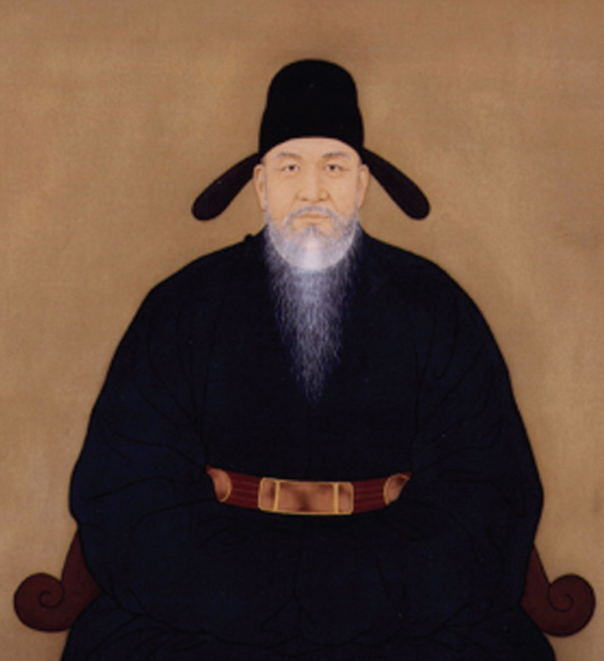
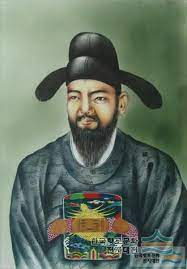

악장(樂章)
(1) 악제의 발달
- 조선의 의례와 음악은 나라를 다스리는 데 질서와 정서를 고르게 하기 위해 그 존재 가치가 있어 왔다. 조선의 궁중음악은 삼국시대의 악제를 계승하여 고려 때부터 당악(唐樂)과 향악(鄕樂)으로 분류되었고, 고려 예종 9년에 송나라에서 대성악(大晟樂)이 수입되어 중국의 악제를 다시 소화 변형시켰다. 고려 충렬왕 때를 전후하여 민간 음악인 이른바 '남녀상열지사'(男女相悅之詞)가 향락을 추구하던 귀족계급의 기호(耆好)에 맞아떨어져 궁중의 행사에 쓰여 고려 가사로서 중요한 유산이 되어 주었다. 조선이 개국되자 유교를 지도 이념으로 삼은 당시의 집권계급은 음와지성(淫蛙之聲)이라 하여 이를 배척하고 중국의 악제에 비기려 했다. 그러나 조선 세종의 탁월한 식견과 박연(朴堧)의 노래에 의해 새로운 악제가 마련된 것이다.
(2) 악장과 가사
- 보통 궁중음악에는 아악(雅樂)과 속악(俗樂)이 있고 그 중간에 조선에서 제작된 향악(鄕樂)이 존재하며, 이 가운데 연창(演唱)되는 문장과 시가를 악장이라 하고, 조선 노래를 가사(歌詞)라 일컬었다. 악장은 고려 초기에 발생한 시가 형태의 하나로 선대 임금의 업적과 금상(今上)의 만수(萬壽)와 자손의 번성을 송축하기 위해 지어졌다. 조선 초 신하들이 지어 왕에게 올린 가사로는 정도전의 <#납씨가(納氏歌)>, <#정동방곡(靖東方曲)>, <#문덕곡(文德曲)>, <#신도가(新都歌)> 등이 있고, 권근의 <#상대별곡(霜臺別曲)>, 변계량의 <#화산별곡(華山別曲)>, 윤회의 <#봉황음(鳳凰吟)>, 예조 찬진(禮曹撰進)의 <#성덕가(聖德歌)> <#축성수(祝聖壽)> 등이 있다. 또한 작자는 알 수 없으나 <#유림가(儒林歌)> <#오륜가(五倫歌)> <#연형제곡(宴兄弟曲)> 등이 있는데 이들은 모두 전형적인 송축가(頌祝歌)로 대개가 임금의 덕을 기리고 새로운 경륜과 도의적 이상을 노래한 것이다. 그 기본형은 4구 2절로 이루어졌고, 한문 가사에 한 줄로 토만 달아 놓는 등 한문의 체취를 벗어나지 못한 것들이다. 이들은 고려 때 경기체가의 영향으로 특권계급의 과장적인 문학으로 평가된다. 그러나 정형(定型)된 악장으로서 가장 먼저 된 것은 세종 때의 <용비어천가(龍飛御天歌)>이며 <월인천강지곡(月印千江之曲)>도 이 악장체의 빛나는 문학유산이다.
(3) 담당 기관
- 조선 초 궁중악을 담당하는 기관으로 태조 원년에 아악서(雅樂署)와 전악사(典樂暑)를 설치하여 처음 태상사(太常司)라는 관청에 소속케 했다. 그 뒤 세종 7년 두 개의 부서를 병합, 아악서(雅樂署)를 두었다. 그 뒤 다시 세조 4년에 이를 장악서(掌樂署)로 고치고, 중종 6년에 또한 장악원(掌樂院)이라 개칭하여 말까지 존속하니, 모든 악제와 악보(樂譜)를 이 곳에서 시행하게 되었다.
(4) 악제의 정리
- 수차에 걸쳐 그 시대에 맞도록 악제를 개편하는 데 큰 공적을 남긴 두 사람 중의 하나는 국초의 명신 맹사성(孟思誠)이고, 하나는 세종시대의 악성 박연이다. 맹사성은 문란하던 고려의 악제를 바로잡기 위해 오랫동안 구악(舊惡)의 보법(譜法)을 연구, 악제를 바로잡았다. 한편 음악에 조예가 깊은 세종의 지도 아래 구악의 유음(遺音)·보법·가사를 널리 수집 연구, 악제 정리에 지대한 공적을 남긴 사람이 바로 박연으로 그는 당시 악성(樂聖)이란 칭호로 불릴 정도였다.
(5) 주요 작가와 작품
정도전(鄭道傳, ?-1398년)
- 조선의 개국 공신·학자. 자는 종지(宗之), 호는 삼봉(三峯). 고려 공민왕 때 과거에 급제, 뒤에 벼슬이 삼도 도통사(三道都統使)에 이름. 후에 방석(芳碩)에게 왕위를 계승시키려다 여러 왕자와 알력이 생겨 이방원에게 죽임을 당함. 유학의 대가로 조선 개국 후 군사·외교·성리학·역사·행정·저술 등 여러 방면에 걸쳐 초기의 건국 작업에 활약함. 불교를 적극 배척하고 유교를 숭상, 유교를 조선의 국시로 삼게 했다. 문필과 시문이 능해서 <신도가>, <납씨가>, <정동방곡>, <문덕곡> 등의 악장과 시조 몇 수를 남김. 저서에 문집 <삼봉집(三峯集)> 외에 <경제육전(經濟六典)> <심기이편불(心氣理篇佛)> 등이 있고, <고려사>와 <학자지남도(學者指南道)> 등을 편찬했다. 시조 1편을 소개하면 다음과 같다.
- 션인교 나린 물이 자하동의 흐르르니, 반천년 왕업이 물소래뿐이로다. 아해야 고국 흥망을 무러 무삼 하리요.
신도가 - 정도전이 지은 악장. 내용은 새서울 한양(漢陽)의 경치와 임금의 덕을 노래한 송축가. <악장가사>에 전하는데 그 가사 전문을 보면 다음과 같다.
- 녜난 楊州 고을히여 디위예 新都形勝이샷다. 開國聖王이 聖代를 니르어샷다. 잣다온뎌 當今景 잣다운뎌 聖壽萬年하샤 萬民의 咸樂이샷다. 아으 다롱디리 알픈 漢江水여 뒤흔 三角山이여 德重하신 江山 즈으메 萬歲를 누리쇼셔.
납씨가 - 조선 태조 2년 정도전이 지은 악장. 모두 4장으로 내용은 이성계가 몽고의 천위승 나하추(天爲丞納哈出)를 쳐 몰아낸 이야기를 읊은 것이다. <악장가사>, <악학궤범> 및 <시용향악보>에 국한문으로 실려 있다.
정동방곡 - 정도전이 지은 악장. 내용은 이성계의 위화도 회군을 칭송해서 부른 것. 모두 4악장으로 문장은 한문에다 국문으로 토를 달았다. <악학궤범>과 <악장가사>에 실려 전함.
문덕곡 - 정도전이 지은 악장. 모두 4악장으로 내용은 조선의 창업을 송축한 노래로서 <악학궤범>에 실려 전함. 그 1장을 들면 다음과 같다.
권근(權近, 1352년-1409년)
- 고려 공민왕-조선 태종 때의 학자·문신. 호는 양촌(陽村). 태종 때 벼슬이 대제학(大提學)에 이르렀음. 시가로 <상대별곡>이 있고, 문집으로 <양촌집(陽村集)>이 있음.
상대별곡(霜臺別曲) - 조선 초 권근이 지은 경기체가 형식의 악장. 내용은 조선의 창업을 노래한 것으로 모두 5장으로 되어 있음. <악장가사>에 실려 전하는데 그 첫장을 들면 다음과 같다.
華山南漢水北 千年勝地 廣通橋 雲鍾街 건나드러 落落長松 亭亭古柏 秋霜烏府 위 萬古淸風ㅅ景긔 엇더하니잇고 (葉) 英雄豪傑 ― 時人才 위 날조차 몃분니잇고.
.jpeg)
변계량(卞季良, 1369년-1430년)
- 조선 태종 때의 학자·문인.일찍이 정몽주와 이색의 문하에서 글을 배웠고 벼슬이 대제학에 이르렀음. 작품에 <화산별곡>이 있고, 시조 2수가 <청구영언>에 실려 전함.
화산별곡(華山別曲) - 조선 세종 때 변계량이 지은 경기체가 형식의 악장. 내용은 조선의 창업을 칭송한 것. 모두 8장으로, 궁중에서 악장으로 쓰였음. 그 가사가 <악장가사>와 <세종실록(世宗實錄)>에 실려 전함.
윤회(尹淮, 1380년-1436년)
-조선 때의 학자·명신. 호는 청향당(淸香堂). 벼슬이 병조판서·대제학에 이르렀고, 세종 때 <자치통감훈의(資治通鑑訓義)>를 찬집했음. 저서로는 <청경집(淸卿集)>이 있으며, 악장 <봉황음>이 <악학궤범>에 전해져 온다.
봉황음(鳳凰吟) - 조선 세종 때 윤회가 지은 악장. 내용은 조선의 왕업과 초창기 문화를 찬양한 것으로 그 가사가 <악학궤범>에 실려 전해 온다.